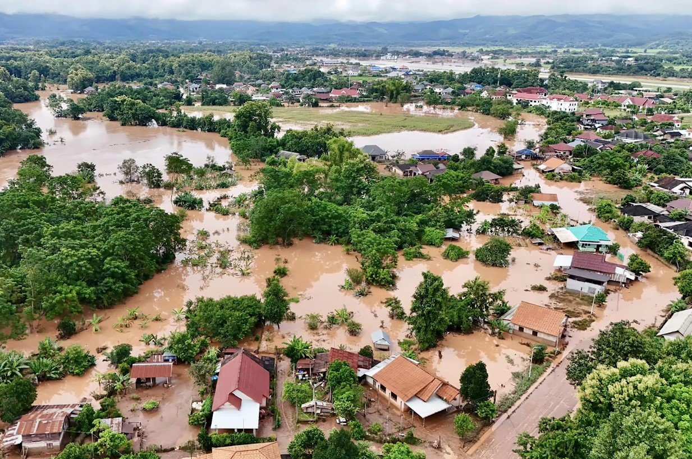

Floods Survival Guide
Before
- Ignore rumours, Stay calm, Don’t panic.
- Keep your mobile phones charged for
emergency communication; use SMS.
- Listen to radio, watch TV, read newspapers
for weather updates.
- Keep cattle/animals untied to ensure their
safety.
- Prepare an emergency kit with essential
items for safety and survival.
- Keep your documents and valuables in
water-proof bags.
- Know the safe routes to nearest shelter/
raised pucca house.
- Evacuate immediately to safe places when
directed by government officials.
- Store enough ready-to-eat food and water
for at least a week.
- Be aware of flash flood areas such as
canals, streams, drainage channels.
During
- Don’t enter floodwaters. In case you need
to, wear suitable footwear.
- Stay away from sewerage lines, gutters,
drains, culverts, etc.
- Stay away from electric poles and fallen
power lines to avoid electrocution.
- Mark any open drains or manholes with
visible signs (red flags or barricades).
- Do not walk or drive in the flood waters.
Remember, two feet of moving flood water
can wash away big cars as well.
- Eat freshly cooked or dry food. Keep your
food covered.
- Drink boiled/chlorinated water.
- Use disinfectants to keep your surroundings
clean.
After
- Do not allow children to play in or near
flood waters.
- Don’t use any damaged electrical goods,
get them checked.
- If instructed, turn off utilities at main
switches and unplug appliances - do not
touch electrical equipment if wet.
- Watch out for broken electric poles and
wires, sharp objects and debris.
- Do not eat food that has been in flood
waters.
- Use mosquito nets to prevent malaria.
- Be careful of snakes as snake bites are
common during floods.
- Don’t use the toilet or tap water if the water
lines/sewage pipes are damaged.
- Do not drink tap water until advised by the
Health Department that the water is safe to
drink.
If you need to Evacuate
- Raise furniture, appliances on beds and
tables.
- Put sandbags in the toilet bowl and cover
all drain holes to prevent sewage backflow.
- Turn off power and gas connection.
- Move to a higher ground/ safe shelter.
- Take the emergency kit, first aid box,
valuables and important documents with
you.
- Do not enter deep, unknown waters; use a
stick to check water depth.
- Come back home only when officials ask
you to do so.
- Make a family communications plan.
- Clean and disinfect everything that got
wet.